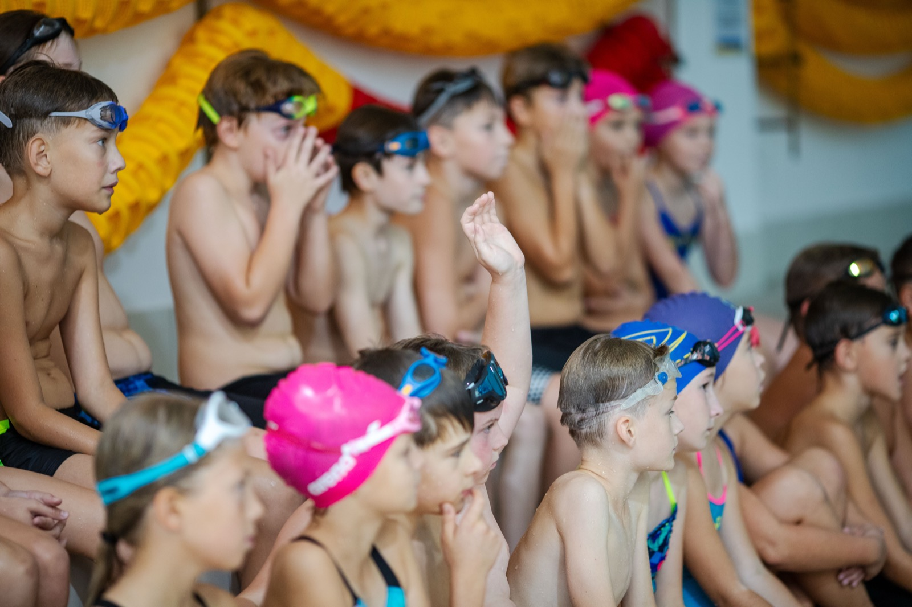
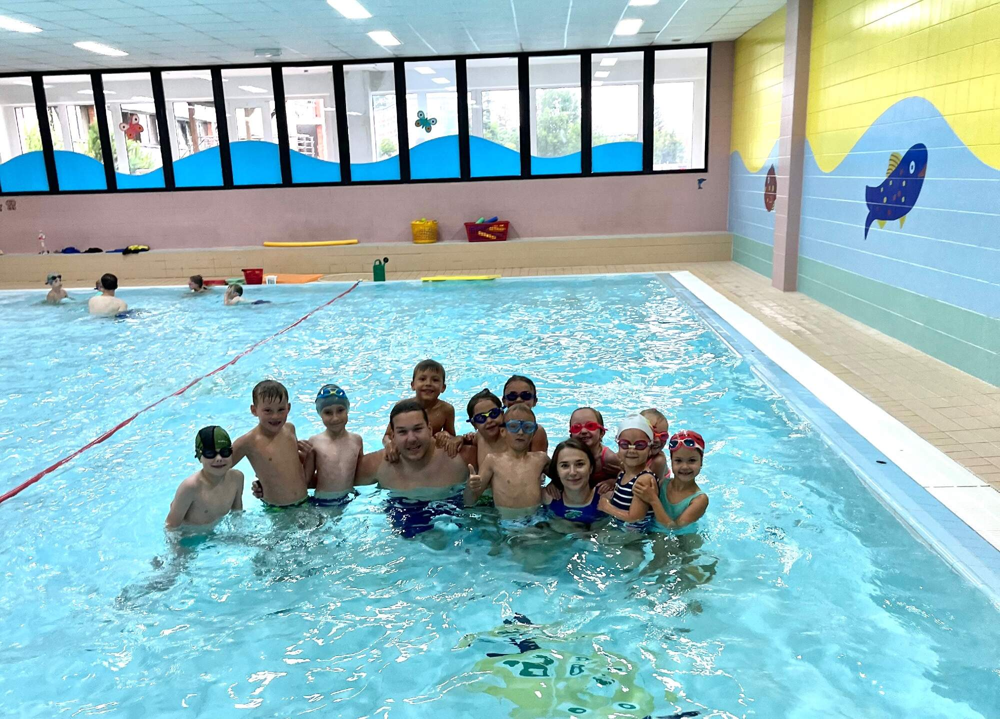

Aktuality
Novinky ze závodů, tréninků a života klubu.
Krajský přebor 10 a 11letého žactva, Šumperk
O víkendu 14. a 15. 11. 2026 se naši plavci ročníků 2016 a 2015 zúčastnili krajského přeboru OLK a ZLK. Za klub startovalo 23 mladších žáků a žaček.

Soustředění sportovních tříd v polském Szczyrku
Fotky ze soustředění najdete v galerii na Rajčeti.
Fotogalerie na Rajčeti
Zlínské plavecké naděje zářily v Prostějově
Na Trojutkání klubů PoPro, UnOl a Zlín jsme vyslali 69 závodníků. Domů vezou smršť osobních rekordů.

Prázdniny, neplaveme!
O podzimních prázdninách od středy do pátku 28. až 30. 10. 2026 se v Přípravce ani v Klubovém plavání neplave. Užívejte dnů volna.
Vezeme 16 medailových umístění z VC Prostějova!
Na 23. Velké ceně města Prostějova reprezentovalo klub 22 plavců.

Fotogalerie z tábora a prázdninové školy 2026
Fotky ze všech turnusů tábora i plavecké školy najdete tradičně na našem profilu na Rajčeti.
Fotogalerie na Rajčeti
Přihlášky na školní rok 2026/27
Elektronické přihlášky jsou spuštěné. Do přípravky se mohou přihlásit děti narozené v roce 2021 a starší.